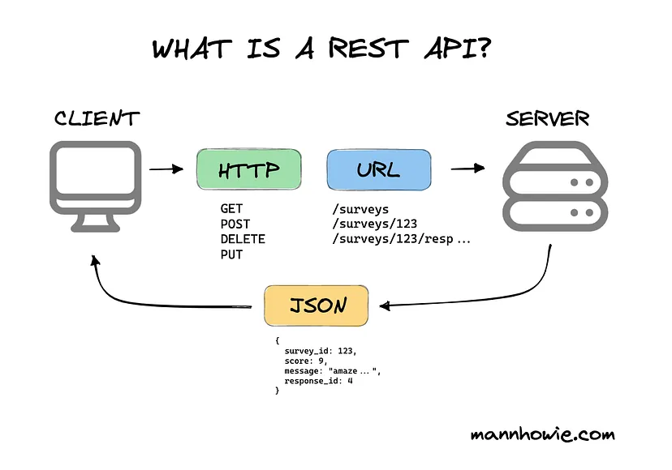

Introduction
REST is the most common communication standard between computers over the Internet.
API stands for Application Programming Interface. It is a way for two computers to talk to each other. The common API standard used by most mobile and web applications to talk to the servers is called REST. It stands for REpresentational State Transfer. REST is not a specification; it is a set of rules that has been the common standard for building web APIs since the early 2000s.
An API that follows the REST standard is called a RESTful API. Some real-life examples are Twilio, Stripe, and Google Maps.
Basics of REST API
A RESTful API organizes resources into a set of unique URLs, or Uniform Resource Identifiers (URIs). The URIs differentiate different types of resources.
A client interacts with a resource by making a request to an endpoint for the resource over HTTP. The request has a very specific format, as shown here.
POST /products HTTP/1.1
The line contains the URL for the resource we'd like to access. The URL is preceded by an HTTP verb which tells the server what we want to do with the resource.
- POST request means we want to create a new resource.
- GET request means we want to read data about an existing resource.
- PUT request means we want to update an existing resource.
- DELETE request means we want to delete an existing resource.

Key Principles of REST
- Statelessness: Each request from client to server must contain all the information needed to understand and process the request. The server cannot store any state about the client session.
- Cacheability: Responses must explicitly indicate whether they are cacheable or not to improve client performance and scalability.
- Uniform Interface: A uniform interface simplifies and decouples the architecture, which enables each part to evolve independently.
- Layered System: A client cannot ordinarily tell whether it is connected directly to the end server or to an intermediary along the way.
- Code on Demand (optional): Servers can temporarily extend or customize the functionality of a client by transferring executable code.
Advantages of REST APIs
- Scalability: REST APIs can handle multiple types of calls, return different data formats, and even change structurally with the proper implementation of hypermedia.
- Flexibility and Portability: Because data is not tied to resources or methods, REST allows for flexible and portable implementations.
- Independence: The client and server are independent. Changes in the server application do not affect the client application and vice versa.
Common Use Cases
REST APIs are commonly used for:
- Web services that require a uniform, stateless interface for interacting with various types of clients (e.g., mobile apps, web apps).
- Public APIs offered by companies to integrate their services with other applications (e.g., Twitter API, GitHub API).
- Internal services within a company to enable communication between different systems and components.
Conclusion
REST APIs are a powerful way to enable communication between different systems over the web. Their statelessness, scalability, and flexibility make them a popular choice for both public and private APIs. Understanding the basics and principles of REST can help developers design and implement effective and efficient APIs for a variety of use cases.